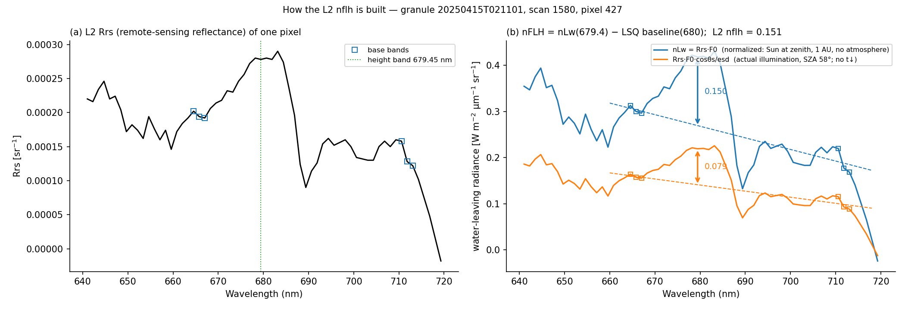
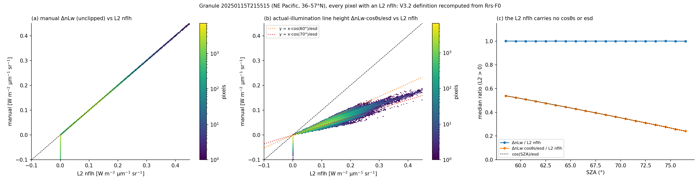
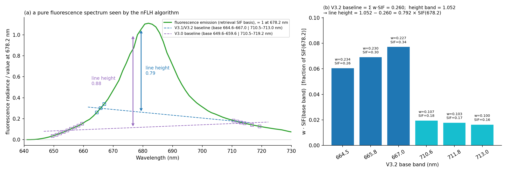
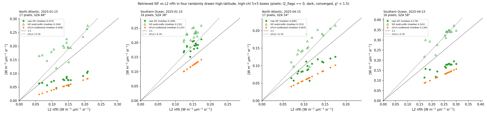

What nFLH Measures
The L2 nflh product is often read as "chlorophyll fluorescence". It is not the fluorescence radiance leaving the water. It is the height of a spectral line above a straight baseline, computed on a normalized water-leaving radiance that pretends the Sun is overhead, at 1 AU, with no atmosphere. This page shows exactly how the number is built, reproduces it from Rrs, and quantifies the two reasons it differs from the fluorescence our retrieval measures.
1. Definition
The definition is stored in every L2 AOP file under processing_control/input_parameters. V3.1 and V3.2 use a different baseline and height band from V3.0:
| Parameter | V3.0 | V3.1 / V3.2 (current) |
|---|---|---|
flh_base_wavelengths (nm) | 649.6 … 659.6 (9 bands) | 710.5 … 719.2 (6 bands) | 664.56, 665.79, 667.00 | 710.50, 711.80, 713.00 |
flh_height_wavelength (nm) | 678.2 | 680.0 (nearest band 679.45) |
flh_offset | 0 | 0 |
| also applied to Rrs | brdf_opt = 7 (bidirectional / Fresnel correction), raman_opt = 2 (water Raman removed) | |
With the V3.2 values, l2gen computes, for every pixel:
Four details matter when reproducing it. F0 multiplies each band before the baseline is fitted; fitting the baseline on Rrs and multiplying by F0 at the height band gives values about 0.4% low (up to 4% in some SZA bins). The height uses the nearest band, 679.45 nm, but the baseline is evaluated at the nominal 680.0 nm. Evaluating it at 679.45 nm instead gives values 4% low. The short-side base bands carry about 70% of the baseline weight. The units are those of a radiance, W m⁻² µm⁻¹ sr⁻¹, but it is a normalized one.

2. The definition reproduces the product exactly
Granule 20250115T215515 (NE Pacific, 36–57°N) has 524,608 pixels with an L2 nflh at solar zenith angles of 58°–77° (median 67.5°), so it tests the algorithm where illumination differs most from the normalized case. Recomputing ΔnLw from Rrs and F0 as above gives a median ratio to the product of 1.0000, a median absolute difference of 0.0008 and a maximum of 0.0027 W m⁻² µm⁻¹ sr⁻¹ (the rounding precision of the stored Rrs). The ratio is flat across SZA (Figure 2c): the stored nflh contains no cos SZA and no Earth–Sun distance factor.
The 9.7% of pixels stored at the clip value are those whose line height is negative: 97.8% of them have a negative recomputed ΔnLw, and 98.7% carry the PRODWARN flag. Filtering on l2_flags == 0 therefore keeps only positive nFLH.

3. Why nFLH is not actual fluorescence
3.1 It is normalized to an overhead Sun at 1 AU with no atmosphere
Fluorescence is light re-emitted by phytoplankton from the light they absorb, so the fluorescence radiance leaving the water scales with the downwelling irradiance that actually reaches it:
The same water therefore has the same nFLH at any sun angle, while the fluorescence it actually emits halves between an overhead Sun and SZA 60°. Our retrieval fits SIF as an additive radiance in the TOA spectrum, y = E0·cosθs/(π·esd)·T↑^α·ρ + T↑·SIF, so the retrieved SIF is the actual water-leaving fluorescence radiance of that overpass. It carries cosθs, t↓ and esd; nFLH does not. At SZA 58°–77° the factor is 0.54–0.24 (Figure 2b, c), ignoring t↓, which lowers it further.
The forward model treats SIF as an isotropic source, which removes any dependence on the viewing angle. It does not remove the dependence on the illumination: an isotropic emitter under weaker sunlight still emits less.
3.2 It is a line height, not the emission amplitude
The fluorescence band is about 25 nm wide and peaks near 682 nm. Its own tails reach the base bands, so the baseline is lifted by the fluorescence it is supposed to sit under, and the line height captures only part of the emission. Running a pure fluorescence spectrum (the SIF basis used by our retrieval, convolved to the OCI bands) through the V3.2 algorithm:

| Quantity (relative to SIF at 678.2 nm) | V3.0 | V3.1 / V3.2 |
|---|---|---|
| fluorescence at the height band | 1.00 (678.2 nm) | 1.05 (679.45 nm) |
| baseline built from the fluorescence tails | 0.12 | 0.26 |
| line height of a pure fluorescence spectrum | 0.88 | 0.79 |
| same, relative to the value at the height band | 0.88 | 0.75 |
| same, relative to the emission peak (681.9 nm, 1.11) | 0.80 | 0.71 |
Moving the short-side base bands from 650–660 nm (V3.0) to 664.6–667.0 nm (V3.1/V3.2) put them on the rising edge of the emission, where it is already 26–34% of its 678 nm value, and cut the captured fraction from 0.88 to 0.79. Even with perfect data, nflh ≈ 0.79 × SIF678 (both normalized). The exact factor depends on the emission shape; 0.79 is for the single library shape our retrieval uses.
3.3 Other things that shape the number
- Clipping. Negative line heights are stored as 0 (with
PRODWARN). Averages over clipped values are biased high in low-fluorescence water, and the negative half of the noise distribution is lost. - One height band. The height is a single band, so band-level noise and atmospheric-correction residuals enter at full weight. The O₂‑B band (687–692 nm) sits right next to it and often leaves a deep dip or spike in Rrs.
- Reflectance corrections applied to emission.
brdf_opt = 7corrects Rrs, fluorescence included, for a reflectance-like angular shape that changes with sun and view angle. Fluorescence is isotropic, so this adds a small, geometry-dependent error to nFLH that we have not quantified. - Excitation versus normalization band. Fluorescence is excited by absorbed light across 400–700 nm, but Rrs divides by E_d at about 680 nm. The illumination only cancels to the extent that E_PAR / E_d(680) is constant, which shifts slightly with sun angle and atmosphere.
- Raman removed.
raman_opt = 2removes water Raman scattering from Rrs; the SIF retrieval does not model it.
4. Putting SIF and nFLH on the same footing
Combining 3.1 and 3.2, for a perfect retrieval and a perfect L2 product:
Raw SIF and nFLH agree on average only by coincidence: the two factors cancel when cosθs ≈ 0.79, i.e. SZA ≈ 37°, which is close to the typical overpass sun angle. At high latitude they separate. Figure 4 shows four randomly drawn high-latitude, high-chlorophyll 5×5 boxes. No threshold on the SIF–nFLH difference was used.

l2_flags == 0, dark, converged, χ² < 1.5). Dashed: 1:1. Dotted: nflh / 0.79. Normalized SIF follows the dotted line; raw SIF does not follow either.| Box (median of good pixels) | n | SZA | raw SIF | L2 nflh | SIF·esd/cosθs | nflh / 0.79 | nflh·cosθs/esd |
|---|---|---|---|---|---|---|---|
| North Atlantic, 2025-01-15 | 17 | 68° | 0.075 | 0.144 | 0.194 | 0.182 | 0.056 |
| Southern Ocean, 2025-01-15 | 16 | 38° | 0.189 | 0.153 | 0.232 | 0.193 | 0.125 |
| North Atlantic, 2025-04-15 | 17 | 54° | 0.090 | 0.108 | 0.153 | 0.136 | 0.063 |
| Southern Ocean, 2025-04-15 | 16 | 58° | 0.178 | 0.260 | 0.341 | 0.328 | 0.136 |
After both corrections, normalized SIF is within 4–13% of nflh/0.79 in three boxes and 20% above it in the fourth, while raw SIF differs from nflh by −48% to +24%. Two caveats remain: t↓ is ignored, and a small additive SIF offset (about +0.02 W m⁻² µm⁻¹ sr⁻¹ in daily statistics) is amplified by 1/cosθs at low sun. For quantitative comparisons it is safer to bring nFLH to actual radiance, nflh/0.79 · cosθs/esd, than to divide SIF by cosθs.